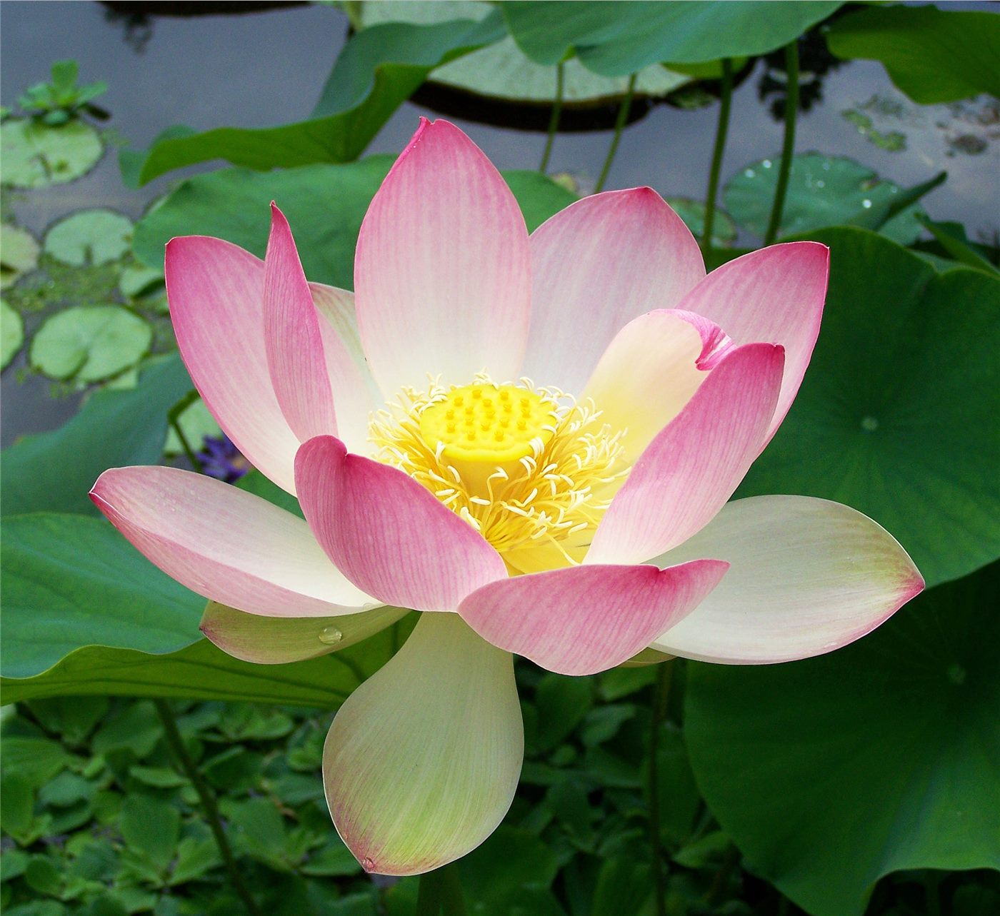

여치 집·얼음 냉차·우물가 등목… 사진으로 보는 여름의 기억
여치 집을 엮고 우물가에서 등목을 하던 여름 풍경을 담은 사진 기획이 조선일보에 실렸다. 냉방 장치가 흔하지 않던 시절의 더위 나기 방식을 기록한 자료들이다.
진태흥 기자 · 2026.08.24
橋사회

기획은 20세기 중후반 한국의 여름 생활을 담은 사진들을 모았다. 여치 집을 엮어 매달아 두던 풍습, 얼음을 띄운 냉차, 우물가에서 등에 물을 끼얹던 등목 같은 장면이 포함됐다.
광고 문의 · 300×250더위를 다루던 방식
에어컨 보급 이전의 피서는 물, 그늘, 바람의 배치를 조정하는 방식이었다. 대청마루의 통풍, 우물물의 낮은 수온, 저녁 무렵 마당에 물을 뿌리는 관습이 모두 같은 원리 위에 있었다.
이런 방식은 도시화와 주거 형태의 변화와 함께 사라졌다. 마당과 우물이 사라지면서 그에 결합돼 있던 생활 관습도 함께 자리를 잃었다.
기록으로서의 사진
이런 사진의 가치는 미학보다 기록에 있다. 당시의 주거 구조, 의복, 그릇, 마을 배치가 함께 찍혀 있어 생활사 자료로 쓰인다. 사진 한 장이 문헌 여러 편보다 구체적인 정보를 담는 경우도 있다.
재한 화교 가정에도 비슷한 여름 기록이 남아 있다. 인천과 서울의 화교 주택은 한국식 마당 구조와 중국식 생활 관습이 섞인 형태였고, 그 혼합은 사진에 남아 있을 때 가장 잘 확인된다.
華橋時報는 화인 가정이 보관해 온 옛 사진의 기록 가치를 중요하게 본다. 이런 자료는 개인의 기억인 동시에 한 공동체가 어떻게 살았는지를 보여 주는 유일한 증거인 경우가 많다.
출처·참고 (사실 확인용 — 본문은 직접 재작성)
· 朝鮮日報 (2026.08.23)
· 朝鮮日報 (2026.08.23)